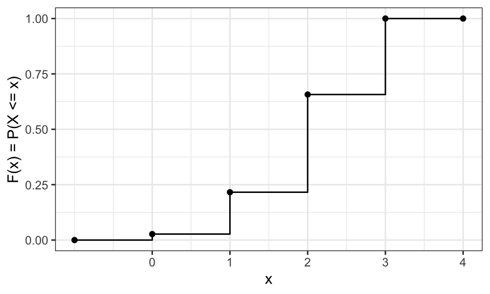
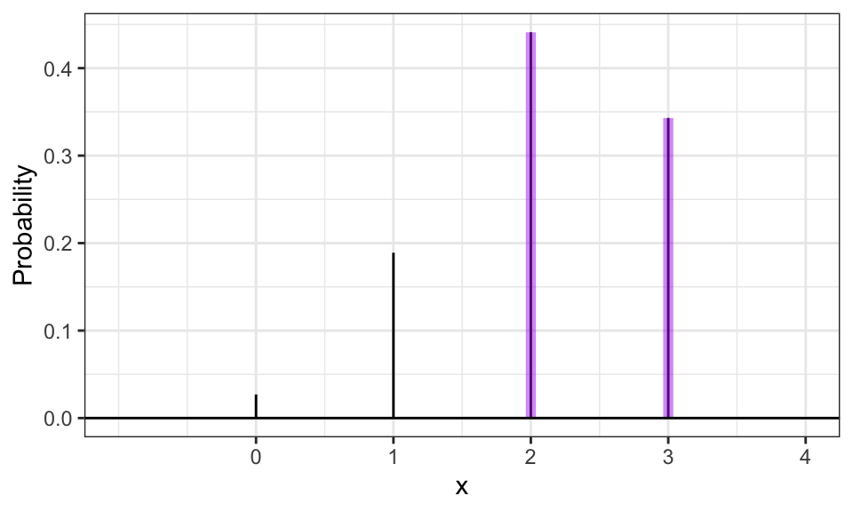
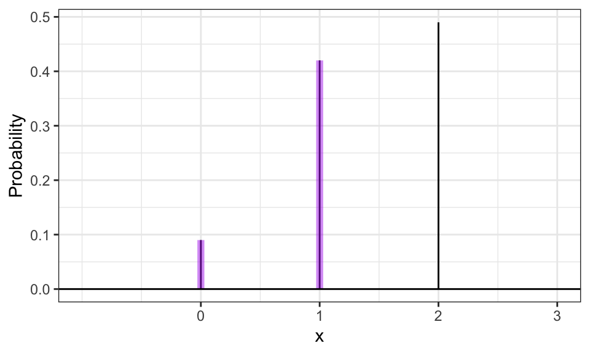
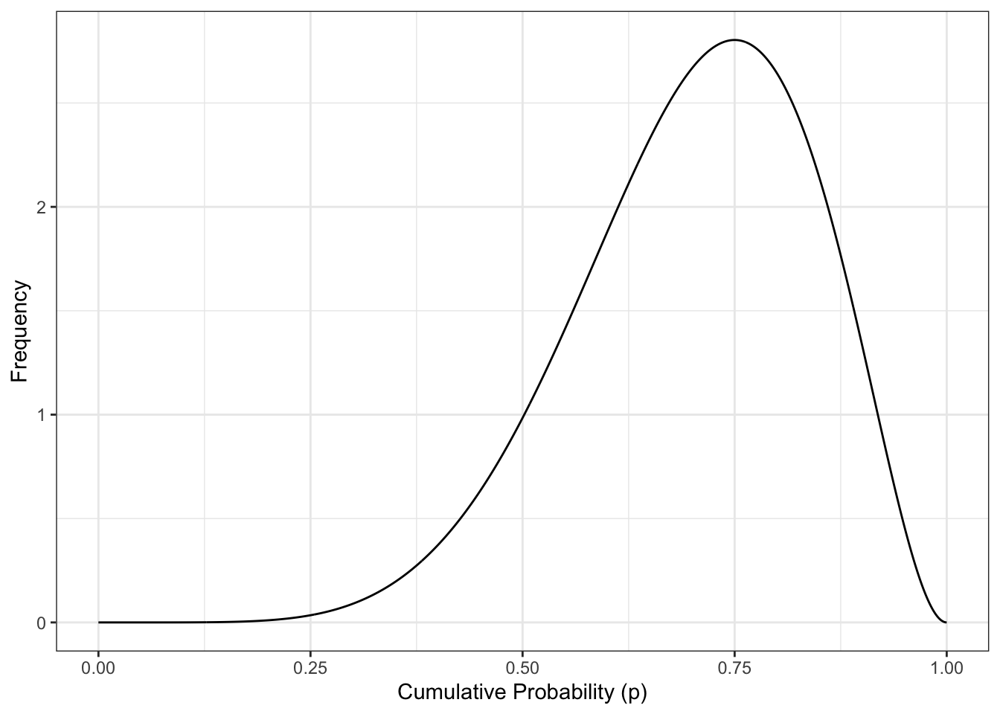
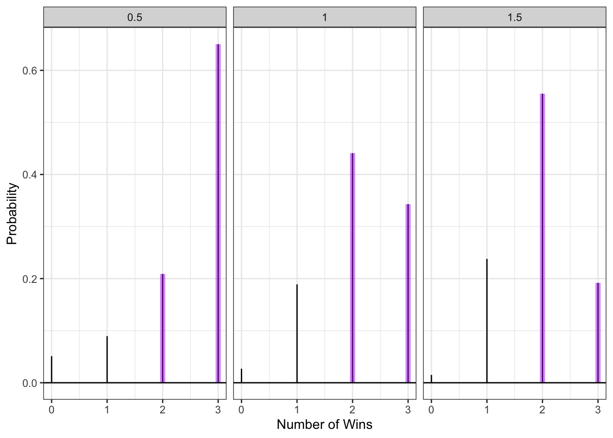
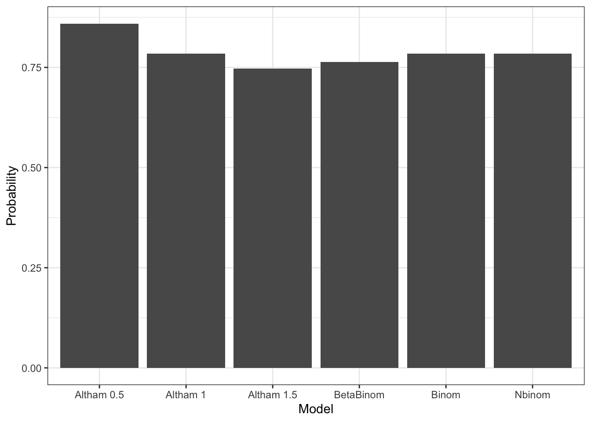
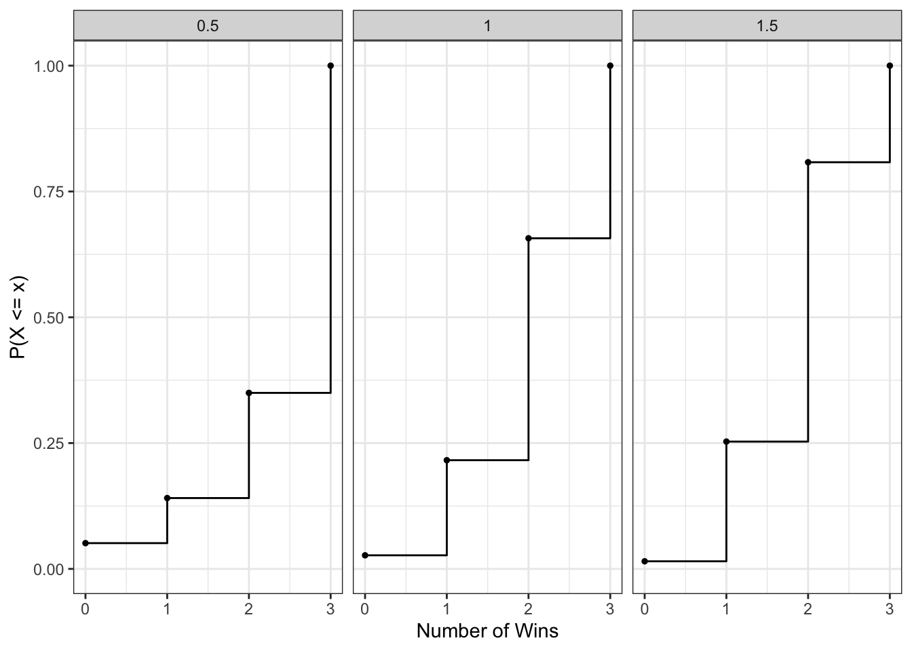

Complete the tasks below. Make sure to start your solutions in on a new line that starts with “Solution:”.
Make sure to use the Quarto Cheatsheet. This will make completing and writing up the lab much easier.
Make sure to use “enter” to make your code readable, so it doesn’t run off the page. I switched the Quarto document to automatically render to .pdf, so you can see what you’re submitting by default. You can switch back for the highlighting by moving the html block above the pdf block in the YAML header.
Don’t forget that you can copy-and-paste code when you’re doing something similar as we did in class!
Make sure to plot all computed probabilities. This is good ggplot practice AND will help make sure you don’t make a mistake when computing the probability.
1 The Binomial and Negative Binomial Distributions
1.1 The Binomial Distribution
In many introductory courses, we make the simplifying assumption of independence in Bernoulli trials. For example, when playing best two-out-of-three legs in a darts match, we would assume Player A has an 70% chance of winning each leg. We write: \[X \sim \text{Binomial}(n=3, p=0.70)\] where
\(X\) is the number of legs won
\(n\) is the number of trials
\(p\) is the probability of the event of interest
Of note, it is not necessarily the case that the players play all three legs – if either player wins legs one and two the match ends.
There are eight possible outcomes for Player A:
(win, win, “win”) \(\longrightarrow\) Player A wins
(win, win, “lose”) \(\longrightarrow\) Player A wins
(win, lose, win) \(\longrightarrow\) Player A wins
(win, lose, lose) \(\longrightarrow\) Player A loses
(lose, win, win) \(\longrightarrow\) Player A wins
(lose, win, lose) \(\longrightarrow\) Player A loses
(lose, lose, “win”) \(\longrightarrow\) Player A loses
(lose, lose, “lose”) \(\longrightarrow\) Player A loses
Note: I use quotations above to denote outcomes where the last match isn’t actually played.
Use the Binomial distribution to compute the probability that Player A wins the match. Make sure write out your probability statement and work to write it in terms of the distribution function (PMF/CDF) to plot the probability using ggplot.
library(tidyverse)size <-3prob <-0.70ggdat <-tibble(x =-1:4) |># created data for PMF and CDF plots mutate(PMF =dbinom(x, size = size, prob = prob),CDF =pbinom(x, size = size, prob = prob))PMF.plot <-ggplot() +# created the plot for the PMFgeom_linerange(data = ggdat,aes(x = x, ymin =0, ymax = PMF)) +geom_linerange(data = ggdat |>filter(x>=2),aes(x = x, ymin =0, ymax = PMF),color ="darkorchid2", linewidth=2, alpha=0.50) +geom_hline(yintercept =0) +scale_x_continuous("x", breaks=0:4) +ylab("Probability") +theme_bw()# created CDF plotCDF.plot <-ggplot(ggdat, aes(x = x, y = CDF)) +geom_step() +geom_point() +scale_x_continuous(breaks =0:4) +ylab("F(x) = P(X <= x)") +theme_bw()CDF.plotPMF.plot
Figure 1: PMF and CDF plots

Figure 2: PMF and CDF plots

1.2 The Negative Binomial Distribution
In intermediate courses, we learn the Negative Binomial distribution that we use to model the number of “failures” until the \(r\)th success. Note that this approach still makes the simplifying assumption of independence in Bernoulli trials.
Specify the two cases necessary to compute the probability. Fully explain these probability statements in the context of a best two-out-of-three match and the Negative Binomial distribution. Finally, compute the probability that Player A wins the match and show you get the same result as the Binomial approach. Make sure write out your probability statement and work to write it in terms of the distribution function (PMF/CDF) to plot the probability using ggplot.
Solution: The two cases in which player A can win are by having zero losses until the second win (W, W) where P(X = 0) and where player A has one loss before the second win (W, L, W or L, W, W) where P(X = 1). Overall the probability using the CDF becomes P(X <= 1) where X is the number of failures which will yield the same result as 1 - P(X = 1) where X is the number of wins.
library(tidyverse)size <-2prob <-0.70ggdat <-tibble(x =-1:3) |># created data for PMF and CDF plots mutate(PMF =dbinom(x, size = size, prob = prob),CDF =pbinom(x, size = size, prob = prob))PMF.plot2 <-ggplot() +# created the plot for the PMFgeom_linerange(data = ggdat,aes(x = x, ymin =0, ymax = PMF)) +geom_linerange(data = ggdat |>filter(x<=1),aes(x = x, ymin =0, ymax = PMF),color ="darkorchid2", linewidth=2, alpha=0.50) +geom_hline(yintercept =0) +scale_x_continuous("x", breaks=0:3) +ylab("Probability") +theme_bw()PMF.plot2
Negative Binomial PMF

2 The Beta Binomial Distribution
One approach to generalize this modeling is to use a Beta-Binomial distribution. This distribution arrises when we let \(p\) be a random variable that follows a Beta distribution: \[\begin{align*}
P &\sim \text{Beta}(\alpha, \beta)\\
X &\sim \text{Binomial}(n, P).
\end{align*}\] This distribution is not part of base R, but is available using the _bbinom functions from the extraDistr package (Wolodzko 2026).
The primary benefit is that the Beta-Binomial enables us to specify some uncertainty about the skill of Player A, as \(p\) does not have to be fixed (e.g., \(p=0.70\)). Suppose the result of the best two-out-of-three match follows a Beta-Binomial distribution where \(\alpha=7\) and \(\beta=3\).
2.1 The Beta Part
Plot the corresponding Beta distribution. Interpret the plot in the context of a best two-out-of-three match and the Binomial distribution. Hint: The Beta distribution is available in base R via _beta().
Solution:
Code
library(tidyverse)alpha <-7beta <-3ggdat <-tibble(p =seq(0,1, length.out=1000)) |># created data for beta plot mutate(pdf =dbeta(p, shape1 = alpha, shape2 = beta))CDF.plot <-ggplot(ggdat) +geom_line(aes(x = p, y = pdf)) +xlab("Cumulative Probability (p)") +ylab("Frequency") +theme_bw()CDF.plot
Solution: The data distribution is right skewed and centered around 0.70 meaning that win probability is around 0.70. Most of the values of p fall between .60 and .80 with very few falling below .45.
How does the Beta incorporate uncertainty about the skill of Player A? Compute the mean and variance of the distribution. Hint: You will find the integrate(...) function helpful here. \[\begin{align*}
E(P) &= \mu_P = \int_{0}^1 p f_P(p) dp\\
var(P) &= \sigma^2_P = \int_{0}^1 (p-\mu_P)^2 f_P(p) dp\\
\end{align*}\]
Solution:
Code
mean <-function(p){p *dbeta(p, 7, 3)} # created mean functionintegrate(mean, 0, 1)$value # used integrate function to find the mean
[1] 0.7
Code
u <-0.7var <-function(p){(p - u)^2*dbeta(p, 7, 3)} # created variance functionintegrate(var, 0, 1)$value # used integrate function to find the variance
[1] 0.01909091
What is the probability that Player A has a win probability of exactly 0.70? Make sure write out your probability statement and work to write it in terms of the distribution function (PDF/CDF) to plot the probability using ggplot. Hint: Think carefully about the properties of continuous distributions here.
Solution: The probability that Player A has a win probability of exactly 0.70 is 0. P(p = 0.70) = 0
Code
library(tidyverse)alpha <-7beta <-3ggdat <-tibble(p =seq(0,1, length.out=1000)) |># created data for beta plot mutate(pdf =dbeta(p, shape1 = alpha, shape2 = beta))ggplot(ggdat) +geom_line(aes(x = p, y = pdf)) +geom_ribbon(data = ggdat |>filter(p ==0.7),aes(x = p, ymin =0, ymax = pdf),fill ="darkorchid2", alpha =0.5) +geom_hline(yintercept =0) +xlab("Win Probability (p)") +ylab("Density") +theme_bw()

What is the probability that Player A has a win probability of at least 0.50? Make sure write out your probability statement and work to write it in terms of the distribution function (PDF/CDF) to plot the probability using ggplot.
Solution: Probability Statement: P(p >= 0.50)
Code
1-pbeta(0.5, 7, 3) # 1 - P(p=0.5 |n=3, p=7)
[1] 0.9101562
Code
library(tidyverse)alpha <-7beta <-3ggdat <-tibble(p =seq(0,1, length.out=1000)) |># created data for beta plot mutate(pdf =dbeta(p, shape1 = alpha, shape2 = beta))ggplot(ggdat) +geom_line(aes(x = p, y = pdf)) +geom_ribbon(data = ggdat |>filter(p >=0.5),aes(x = p, ymin =0, ymax = pdf),fill ="darkorchid2", alpha =0.5) +geom_hline(yintercept =0) +xlab("Win Probability (p)") +ylab("Density") +theme_bw()
What is the 90th percentile of Player A’s win probability based on this Beta distribution? Make sure write out your probability statement and work to write it in terms of the distribution function (PDF/CDF) to plot the percentile using ggplot.
Compute the probability that Player A wins the match. Compare your result to the Binomial and Negative Binomial results. Make sure write out your probability statement and work to write it in terms of the distribution function (PMF/CDF) to plot the probability using ggplot
For each distribution, compute the mean number of legs won for player A. Hint: You can perform the sum over the finite support set here. \[\begin{align*}
E(X) = \mu_X &= \sum_{i=0}^3 i f_X(i)\\
var(X) = \sigma_X &= \sum_{i=0}^3 (i-\mu_X) f_X(i)
\end{align*}\]
Solution:
Code
library(extraDistr)x <-0:3pmf <-dbinom(x, size =3, prob =0.70)sum(x * pmf) # found mean for binomial distribution
[1] 2.1
Code
u <-sum(x * pmf)sum((x - u)^2* pmf) # found variance for binomial distribution
[1] 0.63
Code
x <-0:3beta_pmf <-dbbinom(x, size =3, alpha =7, beta =3)sum(x * beta_pmf) # found mean for beta binomial distribution
[1] 2.1
Code
beta_u <-sum(x * beta_pmf)sum((x - beta_u)^2* beta_pmf) # found variance for beta binomial distribution
[1] 0.7445455
3 Altham’s Multiplicative Binomial Distribution
While the Beta-Binomial enables us to model cases where winning has a clustering effect (e.g., a “hot hand”).
3.1 Probability Mass Function
The mass function for this distribution is below. While it used to be available in the MBD package for R, this package is no longer available. \[f_X(x) = \frac{1}{c} {n \choose x} p^x (1-p)^{n-x} \theta^{x(n-x)}I(x \in \{0, 1, ..., n\})\] where \[c = \sum_{i=0}^n {n \choose i} p^i (1-p)^{n-i} \theta^{i(n-i)}\]
Write a function in R called daltbinom() for computing the PMF of this distribution. Use your function to plot the distribution where \(p=0.70\) where \(\theta=0.50\), \(\theta=1\), and \(\theta=1.50\). Comment on the differences in the context of a best two-out-of-three match
Solution:
Code
library(tidyverse)daltbinom <-function(x, n, p, theta){ i <-0:n c <-sum(choose(n, i) * p^i * (1-p)^(n-i) * theta^(i * (n-i))) # created c variable to plug into pmf function fxx <-choose(n, x) * p^x * (1-p)^(n-x) * theta^(x * (n-x))return(fxx / c)}x_values <-0:3thetas =c(0.50, 1, 1.50) ggdat <-tibble(x =rep(x_values, times =length(thetas)), # got the x's to be used in the functiontheta =rep(thetas, each =length(x_values)) # got the theta to be used in the function) |>rowwise() |>mutate(PMF =daltbinom(x, n =3, p =0.70, theta = theta)) |>ungroup()ggplot() +# created plot for PMFgeom_linerange(data = ggdat,aes(x = x, ymin =0, ymax = PMF)) +geom_linerange(data = ggdat |>filter(x >=2),aes(x = x, ymin =0, ymax = PMF),color ="darkorchid2", linewidth =2, alpha =0.5) +facet_wrap(~theta) +geom_hline(yintercept =0) +scale_x_continuous("Number of Wins", breaks =0:3) +ylab("Probability") +theme_bw()

When theta = 0.5, 3 wins is by far the most probable outcome, and winning two or more times is signficantly more probable than not. When theta = 1, the most common number of wins is two, however, it is still more probabile to win two or more times. When theta = 1.5, the most common result is two wins with a 0.55 probability, and winning two or more times is likely. In all three theta cases, the probability of winning 0 games is close to zero. The probabilities that change are the probabilities of winning one or two games which both increase as theta increases.
3.2 Cumulative Distribution Function
Use your daltbinom() function to create a paltbinom() function for computing the CDF of this distribution. Use your function to plot the distribution where \(p=0.70\) where \(\theta=0.50\), \(\theta=1\), and \(\theta=1.50\).
Solution:
Code
paltbinom <-function(x, n, p, theta){# created function that sums probabilities of daltbinom functionsapply(x, function(end){sum(daltbinom(0:end, n = n, p = p, theta = theta)) }) # used sapply to apply the daltbinom function to a new vector}x_values <-0:3thetas =c(0.50, 1, 1.50) ggdat_cdf <-tibble( # created data to be plotted belowx =rep(x_values, times =length(thetas)), # got the x's to be used in the functiontheta =rep(thetas, each =length(x_values)) # got the theta to be used in the function) |>mutate(CDF =mapply(function(x, theta) {paltbinom(x, n =3, p =0.70, theta = theta) }, x, theta))ggplot(ggdat_cdf, aes(x = x, y = CDF)) +# created plot for CDFgeom_step(direction ="hv", size =0.5) +# made sure cdf was plotted as a step function graphgeom_point(size =1) +facet_wrap(~theta) +scale_x_continuous("Number of Wins", breaks =-1:4) +scale_y_continuous("P(X <= x)", limits =c(0,1)) +# created probability axisylab("Cumulative Probability") +theme_bw()
3.3 The Winning Probability
Compute the probability that Player A wins the match using Altham’s Multiplicative Binomial Distribution. Compare your result to the Binomial and Negative Binomial results. Compare your results to the Beta-Binomial model, too. Make sure write out your probability statement and work to write it in terms of the distribution function (PMF/CDF) to plot the probability using ggplot.
Solution: The probability statement using Altham’s Multiplicative Binomial Distribution is: prob(win) = 1 - F(1)
Code
prob_win <-function(theta){ # calculated the Altham Multiplicative Binomial Distribution probability of winning1-paltbinom(1, 3, 0.70, theta = theta)}prob_win(0.5) # calculating win probabilities for each theta
[1] 0.8592417
Code
prob_win(1)
[1] 0.784
Code
prob_win(1.5)
[1] 0.746993
Code
table_data <-tibble( # created a tibble to store the models and probabilities for plottingmodel =c("Altham 0.5", "Altham 1", "Altham 1.5","Binom", "Nbinom", "BetaBinom"),probability =c(prob_win(0.5),prob_win(1),prob_win(1.5),0.784,0.784,0.763636))ggplot(table_data, aes(x = model, y = probability)) +# plotted models and their win probabilities geom_col() +xlab("Model") +ylab("Probability") +theme_bw()

The probability of winning using both the binomial and negative binomial distributions was 0.784. When using the beta-binomial distribution, the probability of winning was slightly lower at 0.764. Using the Altham model, when theta = 1, the probability of winning is the same as the binomial and negative binomial distributions (0.784). When theta = 0.5, the probability of winning is slightly higher (0.859) and when theta = 1.5, the probability of winning is slightly lower (0.747).
4 Altham’s Multiplicative Beta-Binomial Distribution
You may have wondered – “Can we do the Beta thing with Altham’s version of the Binomial Distribution?” The answer is yes!
4.1 Probability Mass Function
The mass function for this distribution is below. \[f_X(x) = \left[\int_{0}^1 dp
\left(\frac{1}{c} {n \choose x} p^x (1-p)^{n-x} \theta^{x(n-x)}\right)\left(\frac{\Gamma(\alpha+\beta)}{\Gamma(\alpha)\Gamma(\beta)} p^{\alpha-1}(1-p)^{\beta-1}\right)\right]I(x \in \{0, 1, ..., n\})\]
Write a function in R called daltbbinom() for computing the PMF of this distribution. Use your function to plot the distribution where \(\alpha=7\) and \(\beta=3\) where \(\theta=0.50\), \(\theta=1\), and \(\theta=1.50\). Comment on the differences in the context of a best two-out-of-three match.
Hint: You can use the integrate() in R to compute the integral. Note that this requires the function to be vectorized – it should be unless you have added any block conditionals.
Solution:
Code
library(tidyverse)daltbbinom <-function(x, n, a, b, theta){ # created function daltbbinom# If x not a whole number or out of bounds, prob is 0if (x %%1!=0| x <0| x > n) {return(0) }# created function integrand integrand <-function(p) { c_vec <-sapply(p, function(p_val) { i <-0:n sum(choose(n, i) * p_val^i * (1-p_val)^(n-i) * theta^(i * (n-i))) }) # created c variable to plug into pmf function (taken from daltbinom function in 3.1) altham_part <- (1/c_vec) *choose(n, x) * p^x * (1-p)^(n-x) * theta^(x * (n - x)) # created the altham PMF part directly from the lab beta_part <-dbeta(p, a, b) # created the beta density part directly from the labreturn(altham_part * beta_part) }return(integrate(integrand, lower =0, upper =1)$value) # used integrate to apply my integrand function from above }x_values <-0:3thetas =c(0.50, 1, 1.50) ggdat_altbb <-tibble( # created data to be plotted belowx =rep(x_values, times =length(thetas)), # got the x's to be used in the functiontheta =rep(thetas, each =length(x_values)) # got the theta to be used in the function) |>rowwise() |>mutate(PMF =daltbbinom(x, n =3, a =7, b =3, theta = theta)) |>ungroup()# took this section almost directly from the daltbinom part in 3.1ggplot(ggdat_altbb, aes(x = x, y = PMF)) +# created plot for PMFgeom_linerange(aes(ymin =0, ymax = PMF)) +geom_point() +facet_wrap(~theta) +scale_x_continuous("Number of Wins", breaks =0:3) +ylab("Probability") +theme_bw()

When theta = 0.5, the probability of winning three games is extremely high at 0.62, and the probability of winning at least two out of 3 games is more probable than not. When theta = 1, the combined probability of winning two or three games is greater than the combined probability of winning 0 or one games with the probability of winning either two or three games each at around 0.4. When theta = 1.5, the most probable outcome is winning two games, but the combined probability of winning two or three games is greater than the combined probability of winning 0 or one games.
5 A Comparison
Compute the probabilities for all outcomes for Player A.
Loses 0-2 (LL”L”, LL”W”)
Loses 1-2 (WLL, LWL)
Wins 2-0 (WW”W”, WW”L”)
Wins 2-1 (LWW, WLW)
Note: You’ll need to define these outcomes in terms of the random variable.
Create a bar plot (or column plot) using ggplot to show the probability of each outcome under the following conditions:
Binomial
Negative Binomial Note: You can compute the lose probabilities the same way as the win probabilities using success probability (\(1-p\))
Beta-Binomial
Althman Binomial with \(\theta=0.50\) and \(\theta=1.5\)
Althman Beta-Binomial with \(\theta=0.50\) and \(\theta=1.5\)
Comment on the differences in the context of a best two-out-of-three match.
Solution:
Code
library(tidyverse)p <-0.7# created parameters for win probabilities of each round based off 1.1q <-1- p Prob_LL <- q*q # created probabilities for each scenario (if 2 wins or 2 losses in first two games, third game not played)Prob_WLL <- p*q*qProb_LWL <- q*p*qProb_WW <- p*pProb_LWW <- q*p*pProb_WLW <- p*q*pbinomial_probabilities <-c( # created vector with prob of each outcome for binomial condition"Lose 0-2"= Prob_LL,"Lose 1-2"= Prob_WLL + Prob_LWL,"Win 2-0"= Prob_WW,"Win 2-1"= Prob_LWW + Prob_WLW)binomial_probabilities
# created probabilities for negative binomial conditionProb_LL <- q*qProb_1_2 <-choose(2,1)*q*q*p # prob that you win once before your second lossProb_WW <- p*pProb_2_1 <-choose(2,1)*p*p*q # prob that you lose once before your second winnegbinomial_probs <-c( # created vector with prob of each outcome for negativebinomial condition"Lose 0-2"= Prob_LL,"Lose 1-2"= Prob_1_2,"Win 2-0"= Prob_WW,"Win 2-1"= Prob_2_1)negbinomial_probs
# Beta-Binomial part:a <-7# parameters from quesition 2b <-3beta_binom <-function(c, d){ # created beta binomial function that allows me to imput values to represent p^c * (1-p)^d beta(a + c, b + d) /beta(a, b)}Prob_LL <-beta_binom(0, 2) # created probabilities for each scenario (here is 0 wins, 2 losses)Prob_WLL <-beta_binom(1, 2)Prob_LWL <-beta_binom(1, 2)Prob_WW <-beta_binom(2, 0)Prob_LWW <-beta_binom(2, 1)Prob_WLW <-beta_binom(2, 1)beta_binomial_probs <-c( # created vector with prob of each outcome for beta binomial condition"Lose 0-2"= Prob_LL,"Lose 1-2"= Prob_WLL + Prob_LWL,"Win 2-0"= Prob_WW,"Win 2-1"= Prob_LWW + Prob_WLW)beta_binomial_probs
# Althman Part:# (0.5 theta)theta <-0.5# created probs using the function in 3.1 (p^x * (1-p)^(n-x) * theta^(x(n-x)))Prob_LL <- q*qProb_WLL <- p*q*q* theta^2# (p * q^2 * theta^(1*2))Prob_LWL <- q*p*q * theta^2Prob_WW <- p*pProb_LWW <- q*p*p * theta^2Prob_WLW <- p*q*p * theta^2altham_05_probs <-c( # created vector with prob of each outcome for beta binomial condition"Lose 0-2"= Prob_LL,"Lose 1-2"= Prob_WLL + Prob_LWL,"Win 2-0"= Prob_WW,"Win 2-1"= Prob_LWW + Prob_WLW)altham_05 <- altham_05_probs /sum(altham_05_probs) # made it so the sums of the probabilities added to one because they weren't doing it beforealtham_05
# (1.5 theta)theta <-1.5# created probs using the function in 3.1 (p^x * (1-p)^(n-x) * theta^(x(n-x)))Prob_LL <- q*qProb_WLL <- p*q*q* theta^2# (p * q^2 * theta^(1*2))Prob_LWL <- q*p*q * theta^2Prob_WW <- p*pProb_LWW <- q*p*p * theta^2Prob_WLW <- p*q*p * theta^2altham_15_probs <-c( # created vector with prob of each outcome for beta binomial condition"Lose 0-2"= Prob_LL,"Lose 1-2"= Prob_WLL + Prob_LWL,"Win 2-0"= Prob_WW,"Win 2-1"= Prob_LWW + Prob_WLW)altham_15 <- altham_15_probs /sum(altham_15_probs) # made it so the sums of the probabilities added to one because they weren't doing it beforealtham_15
# Althman Beta Part:# (0.5 theta)a <-7b <-3alth_bb <-function(c, d){ # created beta binomial function that allows me to imput values to represent p^c * (1-p)^d beta(a + c, b + d) /beta(a, b)}theta <-0.5Prob_LL <-alth_bb(0,2)Prob_WLL <-alth_bb(1,2) * theta^2Prob_LWL <-alth_bb(1,2) * theta^2Prob_WW <-alth_bb(2,0)Prob_LWW <-alth_bb(2,1) * theta^2Prob_WLW <-alth_bb(2,1) * theta^2altham_bb_05_probs <-c( # created vector with prob of each outcome for altham beta binomial condition (.5 theta)"Lose 0-2"= Prob_LL,"Lose 1-2"= Prob_WLL + Prob_LWL,"Win 2-0"= Prob_WW,"Win 2-1"= Prob_LWW + Prob_WLW)# # made it so the sums of the probabilities added to one because they weren't doing it beforealtham_bb_05 <- altham_bb_05_probs/sum(altham_bb_05_probs)altham_bb_05
# (1.5 theta)theta <-1.5Prob_LL <-alth_bb(0,2)Prob_WLL <-alth_bb(1,2) * theta^2Prob_LWL <-alth_bb(1,2) * theta^2Prob_WW <-alth_bb(2,0)Prob_LWW <-alth_bb(2,1) * theta^2Prob_WLW <-alth_bb(2,1) * theta^2altham_bb_15_probs <-c( # created vector with prob of each outcome for altham beta binomial condition (.5 theta)"Lose 0-2"= Prob_LL,"Lose 1-2"= Prob_WLL + Prob_LWL,"Win 2-0"= Prob_WW,"Win 2-1"= Prob_LWW + Prob_WLW)# # made it so the sums of the probabilities added to one because they weren't doing it beforealtham_bb_15 <- altham_bb_15_probs/sum(altham_bb_15_probs)altham_bb_15
# created dataframe containing all of my probabilities to use in plot df <-tibble(Outcome =c("Lose 0-2","Lose 1-2","Win 2-0","Win 2-1"),Binomial = binomial_probabilities,NegativeBinomial = negbinomial_probs,BetaBinomial = beta_binomial_probs,Altham_0_5 = altham_05,Altham_1_5 = altham_15,AlthamBB_0_5 = altham_bb_05,AlthamBB_1_5 = altham_bb_15)# transposed the dataframe from wide to longdf_new <-reshape(as.data.frame(df), # had to convert tibble to a dataframe because there was an error when I was trying to do it as a tibblevarying =list(names(df)[-1]), # removes the first column of my dataframe (Outcome) for the reshaping processv.names ="Probability", # names of variables in the long format that correspond to multiple variables in the wide formattimevar ="Model", # differentiates multiple records from the same group or individualtimes =names(df)[-1],direction ="long")df_new <- df_new |>select(-id) # id column created when I reshaped the dataframe, so I removed the excess column# created bar plot using data from the transposed dataframeggplot(df_new, aes(x = Outcome, y = Probability, fill = Model)) +geom_bar(stat ="identity", position ="dodge") +theme_bw()
In a best two out of three match, it seems like in every distribution, player A is more likely to win than lose, however in both the Altham and Altham Beta Binomial distributions, a sweep (either 2-0, or 0-2) is more likely to occur than in the other distributions when theta is equal to 0.5 and a sweep is less likely to occur when theta is equal to 1.5.